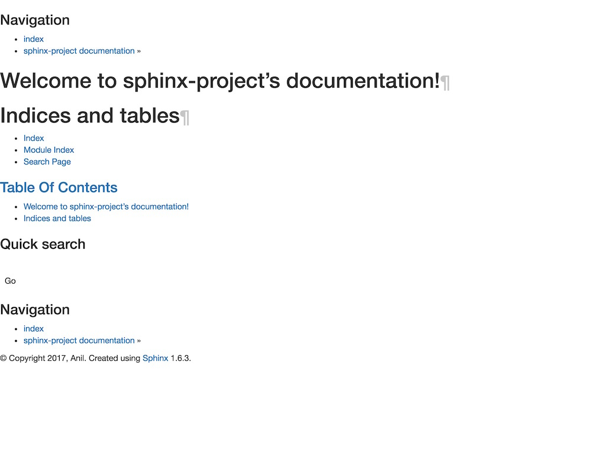
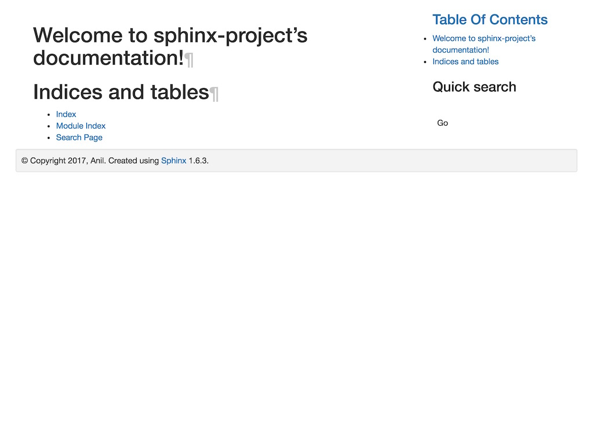

Install Sphinx¶
Install everything¶
# Install (or update) all extensions
pip install restructuredBootstrap restructuredWeb sphinx -U
python setup.py sdist
pip install dist/restructuredBootstrap-0.1.0.tar.gz
pip uninstall restructuredBootstrap restructuredWeb
Create a sphinx project¶
Setup a sphinx project with our extensions¶
NEW_PROJECT_NAME="sphinx-project"
NEW_PROJECT_AUTHOR="Anil"
sphinx-quickstart \
--project=$NEW_PROJECT_NAME \
--author=$NEW_PROJECT_AUTHOR \
--extensions=restructuredBootstrap,restructuredWeb \
--quiet \
$NEW_PROJECT_NAME
cd $NEW_PROJECT_NAME
Build it¶
make html
open _build/html/index.html
Open the project in your favourite editor¶
# Pycharm (if you've set a command line launcher)
pycharm .
# Sublime
subl .
# Textmate
mate .
# Visual studio
code .
{kind=link}
Override the basic theme¶
conf.py - Change the html_theme to basic¶86 87 88 89 | # html_theme = 'alabaster'
html_theme = 'basic'
# sed -i "s/html_theme = 'alabaster'/\html_theme = 'basic'/g" conf.py
|
conf.py - Update the html_sidebars to show the toc and search¶104 105 106 107 108 109 110 111 112 113 114 115 | html_sidebars = {
# Delete these, they're only used with the alabaster theme
# '**': [
# 'about.html',
# 'navigation.html',
# 'relations.html', # needs 'show_related': True theme option to display
# 'searchbox.html',
# 'donate.html',
# ],
# '**': [], # `render_sidebar` in templates will be False
'**': ['localtoc.html', 'searchbox.html']
}
|
conf.py - Add the following to setup the template resources¶114 115 116 117 118 119 120 121 122 123 124 125 126 127 128 | # A dictionary of values to pass into the template engine’s context for all
# pages. Single values can also be put in this dictionary using the -A
# command-line option of sphinx-build.
html_context = {
'html5_doctype': True,
'html_tag': '<html>',
'css_files': [
'https://maxcdn.bootstrapcdn.com/bootstrap/3.3.7/css/bootstrap.min.css',
'https://cdnjs.cloudflare.com/ajax/libs/font-awesome/4.7.0/css/font-awesome.min.css',
],
'script_files': [
'https://ajax.googleapis.com/ajax/libs/jquery/3.2.1/jquery.min.js',
'https://maxcdn.bootstrapcdn.com/bootstrap/3.3.7/js/bootstrap.min.js'
]
}
|
Override the existing
basic/layout.html and give the body a .container class¶# Fetch layout.html to be customized
wget -O _templates/layout.html https://raw.githubusercontent.com/sphinx-doc/sphinx/master/sphinx/themes/basic/layout.html
wget -O _templates/page.html https://raw.githubusercontent.com/sphinx-doc/sphinx/master/sphinx/themes/basic/page.html
# Fetch our sidebar templates
wget -O _templates/localtoc.html https://raw.githubusercontent.com/sphinx-doc/sphinx/master/sphinx/themes/basic/localtoc.html
wget -O _templates/searchbox.html https://raw.githubusercontent.com/sphinx-doc/sphinx/master/sphinx/themes/basic/searchbox.html
Build it¶
make html
open _build/html/index.html
{kind=link}
Add a custom theme¶
At this point, we’re overriding the basic theme provided by sphinx.
Let’s create our own named app.
- https://github.com/sphinx-doc/sphinx/tree/master/sphinx/themes/basic
- https://stackoverflow.com/questions/14622698/customize-sphinxdoc-theme
Create a theme¶
Create the directory structure for our
app theme¶mkdir -p _themes/app/static
mv _templates/* _themes/app/
touch _themes/app/static/style.css
touch _themes/app/theme.conf
Add our theme options to theme.conf¶
cat <<'-EOF' > _themes/app/theme.conf
[theme]
inherit = basic
stylesheet = style.css
pygments_style = pygments.css
-EOF
Create a empty stylesheet importing our basic.css¶
cat <<'-EOF' > _themes/app/static/style.css
/**
* Note: basic.css floats the sidebar, so you may not see it
* @import url("basic.css");
*/
a.headerlink {font-size: 80%; color: #ccc;}
-EOF
conf.py - Update your html_theme and html_theme_path¶86 87 88 | # html_theme = 'basic'
html_theme = 'app'
html_theme_path = ['_themes']
|

{kind=link}
You should see a bare sphinx theme.
Update layout blocks¶
layout.html Contain the sidebar in a column col-xs-12 col-md-3.¶50 51 52 53 54 55 56 | {%- macro sidebar() %}
{%- if render_sidebar %}
<div class="sphinxsidebar col-xs-12 col-md-3" role="navigation" aria-label="main navigation">
{# ... #}
</div>
{%- endif %}
{%- endmacro %}
|
layout.html Contain our main content in a container, row & column¶178 179 180 181 182 183 184 185 186 187 188 189 190 191 192 193 194 195 196 197 | {%- block content %}
<div class="container">
<div class=row">
{%- block document %}
{%- set cls = 'col-xs-12' -%}
{%- if render_sidebar -%}
{% set cls = 'col-xs-12 col-md-9' %}
{%- endif %}
<div class="{{ cls }}">
<div class="document" role="main">
{% block body %}{% endblock %}
</div>
</div>
{%- endblock %}
{%- block sidebar1 %}{{ sidebar() }}{% endblock %}
</div>
</div>
{%- endblock %}
|
layout.html Contain the wild footer with container well well-sm¶203 204 205 206 207 | {%- block footer %}
<div class="footer container well well-sm" role="contentinfo">
{# ... #}
</div>
{%- endblock %}
|
Remove the related bars¶
# Remove all related blocks
sed -i '/{%- block relbar. %}{{ relbar() }}{% endblock %}/d' _themes/app/layout.html

{kind=link}
The layout is now using rows and columns.
Add some demo content¶
wget -O index.rst https://gist.githubusercontent.com/lakhman/bc9b77c616fae791fa84da70461b9059/raw/fd915b34840743c713f1461260061388fea3281c/index.rst
wget -O test-document.rst https://gist.githubusercontent.com/lakhman/bc9b77c616fae791fa84da70461b9059/raw/fd915b34840743c713f1461260061388fea3281c/test-document.rst
index.rst - Add some demo content to get started¶1 2 3 4 5 6 7 8 9 10 11 12 13 14 15 16 17 18 19 20 21 22 23 24 25 26 27 28 29 30 31 32 33 34 35 36 37 38 39 40 41 42 43 44 45 46 47 48 49 50 51 52 53 54 55 56 57 58 59 60 61 62 63 64 | ==========================================
Welcome to sphinx-project's documentation!
==========================================
.. Show the local page contents within the document
.. http://docutils.sourceforge.net/0.4/docs/ref/rst/directives.html#table-of-contents
.. contents::
:local:
________________________________________________________________________________
.. Add a toctree to reference other documents
.. http://www.sphinx-doc.org/en/stable/markup/toctree.html
.. toctree::
:maxdepth: 2
:caption: Table of Contents:
/test-document
----------------
Congratulations!
----------------
.. alert-success:: **Congratulations!**
You've setup a basic sphinx project with restructuredBootstrap and restructuredWeb!
________________________________________________________________________________
-----------
Example Row
-----------
.. row::
.. column:: 12,6
An example of using rows and columns to embed a ted talk.
Physics is like sex: sure, it may give some practical results, but that's not why we do it.
.. hr::
.. button-primary:: :fa:`file-video-o fw` View the talk
:class: large block
:doc: test-document
.. column:: 12,6
.. ted:: https://www.ted.com/talks/richard_feynman
________________________________________________________________________________
==================
Indices and tables
==================
* :ref:`genindex`
* :ref:`modindex`
* :ref:`search`
|
{kind=link}
test-document.rst - Add another test page to link to¶1 2 3 4 5 6 7 8 9 10 11 12 13 14 15 16 17 18 19 20 21 22 23 24 25 26 27 28 29 30 31 32 33 34 35 36 37 38 | =============
Test Document
=============
A document linked to from ``index.rst``.
-----------
Example Row
-----------
.. row::
.. column:: 12,6
.. alert-info:: **Hello world!** Here's a great deep learning course.
"Hello world!"
.. column:: 12,6
.. youtube:: vOppzHpvTiQ
________________________________________________________________________________
------------
Example Tabs
------------
.. tabs::
:name: demo-tabs-1
.. tab:: :fa:`book fw` Tab #1
.. alert-success:: Content for tab #1.
.. tab:: :fa:`user-o fw` Tab #2
.. alert-info:: Content for tab #2.
|
Build it¶
make html
open _build/html/index.html
{kind=link}
Setup Webpack¶
Setup webpack to manage our dependencies and parse our LESS.
Install webpack and dependencies for less compilation¶
npm init -f
# Webpack
npm install --save-dev webpack webpack-dev-server less \
css-loader file-loader less-loader style-loader url-loader \
extract-text-webpack-plugin \
filemanager-webpack-plugin
# Bootstrap CSS and fastclick JS
npm install --save bootstrap fastclick
Create our webpack
less, config and entry files.¶mkdir -p _themes/app/webpack/
touch _themes/app/webpack/webpack.entry.js
touch _themes/app/webpack/app.less
touch webpack.config.js
conf.py - Update your html_context css_files and script_files¶html_context = {
'css_files': [
# ...
'_static/app.compiled.css',
],
'script_files': [
# ...
'_static/webpack_entry.bundle.js'
]
}
webpack.config.js - Create our webpack configuration.¶1 2 3 4 5 6 7 8 9 10 11 12 13 14 15 16 17 18 19 20 21 22 23 24 25 26 27 28 29 30 31 32 33 34 35 36 37 38 39 40 41 42 43 44 45 46 47 48 49 50 51 52 53 54 55 56 57 58 59 60 | const webpack = require('webpack');
const ExtractTextPlugin = require("extract-text-webpack-plugin");
const FileManagerPlugin = require('filemanager-webpack-plugin');
const extractLess = new ExtractTextPlugin({
filename: "./_themes/app/static/app.compiled.css",
disable: process.env.NODE_ENV === "production"
});
module.exports = {
entry: "./_themes/app/webpack/webpack.entry.js",
devtool: '#inline-source-map',
output: {
path: __dirname,
filename: "./_themes/app/static/webpack.entry.bundle.js"
},
module: {
loaders: [
{ test: /.css$/, loader: "style-loader!css-loader" },
{ test: /\.(png|jpg)$/, loader: 'url-loader'}
],
rules: [{
test: /\.less$/,
use: extractLess.extract({
use: [
{ loader: "css-loader", options: { minimize: false, sourceMap: true }},
{ loader: "less-loader", options: { sourceMap: true }}
],
// use style-loader in development
fallback: "style-loader"
})
},
{
test: /\.woff($|\?)|\.woff2($|\?)|\.ttf($|\?)|\.eot($|\?)|\.svg($|\?)/,
loader: 'url-loader'
}]
},
plugins: [
extractLess,
// Example: Provide underscore
// new webpack.ProvidePlugin({ _: "./../../static/libs/underscore" }),
// Add source-maps with "devtool: '#inline-source-map'"
new webpack.SourceMapDevToolPlugin({
filename: '[file].map',
append: '\n//# sourceMappingURL=/_static/[url]'
}),
// https://github.com/gregnb/filemanager-webpack-plugin
new FileManagerPlugin({
onEnd: {
copy: [{
source: '_themes/app/static',
destination: '_build/html/_static'
}]
}
})
]
};
|
_themes/app/webpack/app.less - Create our app less file.¶@import "~bootstrap/less/variables";
h1, h1 a, h2 a {
color: @brand-danger;
}
_themes/app/webpack/webpack.entry.js - Create our entry file.¶require("./app.less");
var FastClick = require('fastclick');
FastClick.attach(document.body);
// $(document).ready(function(){});
Run
webpack to compile our CSS and javascript.¶webpack
# Use --watch to auto-recompile on changes.
# webpack --watch
{kind=link}